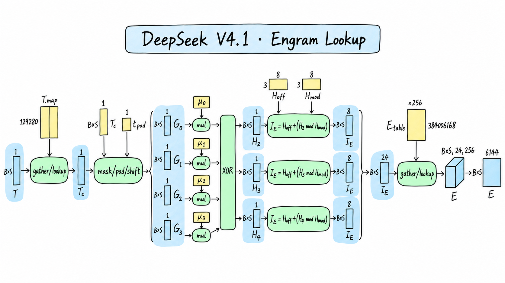
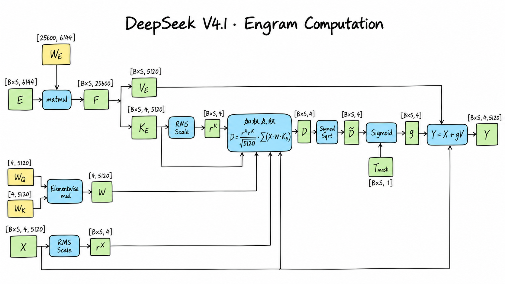

Layer 1：从 Engram 写入到局部注意力与 MoE
1. 相对 Layer 0，只看两处差异
本文分析 DeepSeek-V4.1-Flash 的 Layer 1。Layer 0 已经完整讲过 mHC、RMSNorm、局部 Attention / SWA 和 MoE；Layer 1 不再重复这些推导，而是回答两个新问题：
- Engram 怎样在普通 Transformer Block 之前，根据当前 token 及其局部历史检索条件记忆，并写回四路残差？
- Layer 1 的第一次
hc_pre为什么不再使用固定的 ，而是使用 Layer 0 MoE 侧传来的动态pre_next？
记
Layer 1 从 Layer 0 接收：
其中 是四路残差， 是 Layer 0 的 MoE 侧 mHC 生成的下一次汇聚系数。完整数据流为：
逐步对照如下。“结构相同”只表示算子、shape 和执行顺序与 Layer 0 相同；Layer 1 拥有自己的参数，输入数值也已经被 Engram 改变，并不与 Layer 0 共享权重或计算结果。
| 步骤 | 相对 Layer 0 | Layer 1 的行为 |
|---|---|---|
| 1. Engram Hash、查表、门控与四路写回 | 新增 | 在普通 Block 前修改四路残差；不修改传入的 pre_next |
| 2. Attention 侧 mHC 系数生成 | 结构相同 | 从 Engram 更新后的四路残差预测本层 attn_pre/post/comb |
3. Attention 入口 hc_pre |
输入不同 | 使用 Layer 0 MoE 侧生成的动态 pre_next，不再使用 identity-pre |
| 4. Attention 入口 RMSNorm | 结构相同 | 独立参数，输入来自步骤 3 |
| 5. Local Attention / SWA | 结构相同 | 仍是 128-token 局部窗口，没有 compressed/global KV 或 Indexer |
6. Attention 侧 hc_post |
结构相同 | 融合 Attention 输出和 Engram 更新后的四路残差 |
| 7. MoE 侧 mHC 系数生成 | 结构相同 | 生成本层 ffn_pre/post/comb |
8. MoE 入口 hc_pre |
结构相同 | 使用本层 Attention 侧生成的 attn_pre |
| 9. MoE 入口 RMSNorm | 结构相同 | 独立参数 |
| 10. MoE FFN | 结构相同 | 384 个 routed experts 选 6 个，并执行 1 个 shared expert |
11. MoE 侧 hc_post |
结构相同 | 输出四路残差，并把 ffn_pre 作为下一层的 pre_next |
固定配置中 compress_ratios[1]=0，而 kv_source_layers 与 index_source_layers 都从 Layer 2 开始。因此 Layer 1 与 Layer 0 一样只执行 SWA；本页新增的注意力外路径只有 Engram。配置核查
2. Engram 在哪里，解决什么问题
Engram 把条件记忆作为 MoE 条件计算之外的另一条稀疏轴：MoE 根据隐藏状态选择少量专家进行动态计算；Engram 则根据确定性的局部 -gram 地址，从巨大表中只读取少量行。官方论文把这一过程概括为 Tokenizer Compression、Multi-Head Hashing、Context-aware Gating 和 Multi-branch Integration。Engram 论文
DeepSeek-V4.1-Flash 在零起始编号的 Layer 1 和 Layer 14 各放置一个 Engram。两者合计约 196B 逻辑参数；每个模块使用 -gram 阶数 、8 个 Hash head，每个阶数共 维查表结果。Layer 1 的表有 384,006,168 行，每行 256 维。技术报告 §2.4.2
参考前向并不是进入 Layer 1 后才开始构造 Hash。Transformer.forward 会在进入层循环前，根据原始 input_ids 一次生成两个 Engram 层的 Hash：
这里维度 2 对应 Layer 1 与 Layer 14， 对应三个 -gram 阶数和八个 Hash head。执行到 Layer 1 时，只取
因此需要把两个位置分清：
- Transformer 级 Hash 前置组件：处理 Token 压缩、历史状态、两个 Engram 层的 Hash 与索引。
- Layer 1 Engram 模块：读取本层的 24 个索引，执行查表、投影、门控和残差写回。
这也解释了为什么后面的显存分析不能把完整 Hash buffer 在 Layer 1 和 Layer 14 各算一遍。前向接入位置
3. 从 Token 到 24 个查表地址
3.1 Token 压缩与跨前向历史
原始 Token ID 为
Hash 前先通过固定映射 把 129,280 个原始 Token ID 映射到 99,092 个压缩 ID：
这张映射在模型构建时由 tokenizer 生成，会对可完整解码的 token 文本执行 Unicode 规范化、去音调、转小写、空白折叠和首尾空白处理；规范化结果相同的 token 共用压缩 ID。它是固定运行时 buffer，不是可学习参数。
Hash 组件还维护
所以 Decode 阶段可以读取 Prefill 或更早 Decode 已写入的最近三个压缩 Token ID，而不必重新处理全部历史。对于图像 span，压缩缓存写入特殊的 DEAD=-1；任何跨过 DEAD 的 -gram 都会被阻断并使用固定 pad_id 补齐。
令 表示位置 向前回看 步后的有效压缩 ID， 是当前 token：
3.2 乘法-XOR Hash 与互不重叠的分区
对 Engram 层 ，四个回看位置各有一个由层号确定的奇数乘数 。2、3、4-gram 的滚动 Hash 为：
每个阶数再进入八个不同的质数桶。记 为模数、 为这段桶区间的起始 offset：
三个阶数乘八个 head，得到每 token 24 个地址。每个 使用不同质数大小和互不重叠的 offset，因此可以把它们理解为 24 张逻辑表；在参数存储上，它们拼成一张连续大表。

图中 表示当前 token， 依次向历史回看；mask/pad/shift 还读取未单独画出的有效性 mask。正文公式是精确定义，图中的蓝色 $B\times S$ 块用于简写逐 token 的逻辑 shape。
Layer 1 的可学习表为：
按 24 个地址读取：
最后展平：
“每 token 读取 24 行”是逻辑查表口径。固定 reference 中 FP8 数据与对应 E8M0 scale 分别通过 F.embedding gather，因此它不能直接等同于底层访存指令数。Hash 实现
4. 从查表结果到四路残差写回
4.1 一次投影生成四个 Key 和一个共享 Value

Engram 接收查表结果和 Layer 0 输出的四路残差：
| 对象 | Shape | 性质 |
|---|---|---|
[B,S,6144] |
24 行查表结果展平，BF16 | |
[B,S,4,5120] |
四路残差，BF16 | |
[25600,6144] |
FP8 可学习投影，无 bias | |
各 [4,5120] |
BF16 可学习逐维缩放 | |
[B,S] |
可选 BOOL；图像位置为 false |
统一采用权重 [输出,输入] 约定：
再按 切分：
四路各有一个 Key，但 Value 只有一份。Engram 最终向四路写入相同的 ，差异来自四路各自的 gate。
4.2 归一化匹配分数与 Signed Sqrt
先合并两套逐维缩放：
对于残差流 ，分别沿 5120 维计算 RMS 倒数：
加权归一化点积为：
固定实现不会直接把 送入 Sigmoid，而是先执行带符号平方根。这里使用 copysign 而不是简单的 ，从而与源码在 时复制正号的边界行为一致：
于是
多模态输入中的图像位置随后把 gate 置零；纯文本前向不需要 mask：
图 2 把这两步合并画在 Sigmoid 附近；源码顺序是 先 Sigmoid，再用 mask 置零。
4.3 四路写回，但不改变 pre_next
最终输出为：
这一步有三个容易混淆的点：
- 在四路之间共享，不是从表中读取四份不同 Value。
- 四路 gate 独立，因此同一个 对四路的写入幅度不同。
- Engram 只返回更新后的四路残差 ；Layer 0 传来的 不经过 Engram，也不会被它重新计算。Engram 前向
5. Layer 1 第一次 hc_pre 的真正变化
模型只在最初把 embedding 扩成四路时创建一次 identity-pre：
Layer 0 的 Attention 入口使用它；Layer 0 执行结束后返回 MoE 侧生成的 ffn_pre，即 。Layer 1 不会重新创建 identity-pre，而是直接用这个动态状态汇聚 Engram 更新后的四路残差：
与此同时，Layer 1 Attention 侧的 hc_mixes 已经从 预测出新的 attn_pre/post/comb。但这里的第一次 hc_pre 仍使用上一层传来的 ；本层新生成的 attn_pre 留给紧随其后的 MoE 入口。顺序是：
这正是 Single-Pass mHC 的跨子层、跨层系数传递。与 Layer 0 相比，Layer 1 的 hc_pre 算法没有变化，变化的是第一次调用的系数来源。Block.forward
6. 后续模块为什么不再展开
Engram 写回之后，Layer 1 进入与 Layer 0 同构的 Block。下面只记录复用关系；公式、shape 和内部步骤见 Layer 0：从四路残差到局部注意力与 MoE。
| 模块 | Layer 1 相对 Layer 0 | 需要记住的差别 |
|---|---|---|
| Attention 侧 mHC | 算法与 shape 相同，参数独立 | 系数从 Engram 更新后的 预测；首次汇聚用动态 pre_next |
| 两个入口 RMSNorm | 相同结构，参数独立 | 输入数值不同 |
| Local Attention / SWA | 相同结构，参数独立 | 同为 128-token 窗口；没有 global KV、Compressor 或 Indexer |
Attention 侧 hc_post |
相同 | residual 是 Engram 更新后的四路张量 |
| MoE 侧 mHC | 相同结构，参数独立 | 其 ffn_pre 传给 Layer 2 |
| MoE FFN | 相同结构，参数独立 | 仍是 Top-6 routed + 1 shared expert |
| Local KV cache 与 RoPE 表 | 相同 shape，各层独立 | 不与 Layer 0 共用缓存或权重 |
所以 Layer 1 可以概括为：
这里的加号表示结构差异，不表示参数共享。
7. 参数量与 GPU 驻留字节
7.1 Layer 1 Engram 的逻辑参数量
只统计可学习模型标量，FP8 scale 计入驻留字节、不重复算作逻辑模型参数：
| 参数 | Shape | 逻辑参数量 |
|---|---|---|
[384006168,256] |
98,305,579,008 | |
[25600,6144] |
157,286,400 | |
[4,5120] |
20,480 | |
[4,5120] |
20,480 | |
| Engram 合计 | — | 98,462,906,368 |
技术报告中的“196B Engram”是 Layer 1 与 Layer 14 两个模块的模型级近似；这里给的是 Layer 1 单个模块按固定配置得到的精确逻辑参数量。
7.2 Engram 的参考 GPU 权重存储
固定 reference 中：
- Engram 表用 FP8 E4M3 数据，每 32 个元素配一个 E8M0 scale。
- 用 FP8 E4M3 数据和 block scale。
- 用 BF16。
因此：
| 部分 | FP8 / BF16 数据与 scale | GPU 驻留字节 |
|---|---|---|
| Engram 表 | 101,377,628,352 B | |
| 157,440,000 B | ||
| 81,920 B | ||
| Engram 合计 | — | 101,535,150,272 B |
7.3 Layer 1 整层参数汇总
Layer 1 的基准 Block 参数结构与 Layer 0 相同，再加本层 Engram：
| 部分 | 逻辑参数量 | GPU 驻留字节 |
|---|---|---|
| 基准 Block：两套 mHC、Norm、SWA、MoE | 13,754,511,990 | 7,423,022,552 B |
| Layer 1 Engram | 98,462,906,368 | 101,535,150,272 B |
| Layer 1 合计 | 112,217,418,358 | 108,958,172,824 B |
Engram 占 Layer 1 逻辑参数的约 87.74%，占参考权重驻留字节的约 93.19%。这不表示生产部署必须把 101.5 GB Engram 全放在单张 GPU：官方报告明确采用确定性地址进行预取，参考实现也支持按行跨 world_size 分片，并在查表后合并结果。本节的单卡完整驻留值是便于核算的 world_size=1 基准，不是部署建议。
8. 前向计算量
8.1 统计口径
沿用 Layer 0：统计数学前向的标量加、减、乘，每次计 1；XOR、整数取模、逻辑 Lookup、rsqrt、sqrt、exp、除法和比较单列。忽略量化/反量化、类型转换、通信、reshape、数据搬运和具体 kernel 融合。
Hash 在官方 reference 中同时生成 Layer 1、14 的地址。为了与“本层增量”一致，主表只归因 Layer 1 的一个 Hash slice；完整 Hash 前置调用的整数操作量在表后单独说明。
8.2 Engram 每 token 的算法级运算
| 阶段 | Layer 1 每 token 的加 / 减 / 乘 | 其他运算 |
|---|---|---|
| 压缩 Token ID | 0 | 逻辑 Lookup：1 |
| 四个回看位置乘 Hash 乘数 | 4 | XOR：3 |
| 24 个桶取模并加 offset | 24 | 整数取模：24 |
| 24 行 Engram 查表 | 0 | 逻辑行 Lookup：24 |
| 投影 | 314,547,200 | — |
| 的八个 RMS 因子 | 81,928 | rsqrt：8 |
| 四路加权点积与归一化缩放 | 61,448 | — |
| Signed Sqrt 与 Sigmoid | 8 | sqrt：4；exp：4；除法：4；比较：4 |
| 四路 写回 | 40,960 | — |
| 合计 | 314,731,572 | 见上 |
其中最大项来自：
此外，参考实现每次 Engram 调用都会计算一次：
产生 20,480 次逐元素乘法。若部署实现预先合并这两个只以乘积形式使用的静态权重，可省去这项。
所以处理 个 token 时：
另有：
这里把 Sigmoid 按 展开计数；实际数值稳定 kernel 的指令数可能不同。Mask、边界检查、历史 gather 和布尔选择随输入情况变化，没有混入主公式。
完整 NgramHashState.forward 一次会同时计算 Layer 1 和 Layer 14，所以参考调用的 Hash 主体为每 token 8 次整数乘法、6 次 XOR、48 次取模和 48 次 offset 加法，但 Token 压缩映射仍只做一次。本文把其中一半 Hash 主体归因给 Layer 1；分析 Layer 14 时不能再次计入共享 Token 映射和缓存。
8.3 Layer 1 整层计算量
Layer 0 的官方通用路径为：
其中 是每个查询实际参与 SWA 评分的平均局部历史长度，。Layer 1 后半段使用同一通用路径；它的首次 hc_pre 是动态系数，不能做 Layer 0 identity-pre 的理论常量折叠。
加上 Engram：
在暂不考虑 的固定部分时，Engram 使本层每 token 的加/减/乘主项比 Layer 0 reference 增加约 41.68%。这个比例不是实际延迟比例：Engram 表可预取和分片，FP8 GEMM、访存、通信、并发重叠与 kernel 融合都会改变硬件时间。官方报告的 Engram 预取说明
9. Required Global Memory 理论下界与状态
这一节给出固定 reference 的共享状态视角：参数和 scale、层边界 I/O、本层 local Attention 状态、模型级 Hash 固定 buffer、Token 历史 cache，以及同时服务 Layer 1 和 Layer 14 的完整 engram_hashes。内部 假设可通过融合、分块或工作区复用，不要求全部同时写入 Global Memory。
9.1 边界 I/O 与持久状态
Layer 1 输入和输出均包含四路 BF16 残差与一份 FP32 pre：
本层 Attention 状态与 Layer 0 相同：
模型级 Hash 前置组件持有：
| 对象 | Shape / dtype | 字节数 |
|---|---|---|
| Token 压缩映射 | [129280] INT64 |
1,034,240 |
| 两层 Hash 乘数 | [2,4] INT64 |
64 |
| 两层质数模数 | [2,3,8] INT64 |
384 |
| 两层 offset | [2,24] INT64 |
384 |
| 压缩 Token 历史 cache | [B_max,S_max] INT64 |
|
| 本次完整 Hash 输出 | [B,S,2,24] INT64 |
前四项合计 1,035,072 Byte。engram_hashes 在进入 Layer 0 前生成，并至少保留到 Layer 14 消费完成；Layer 1 使用的 [B,S,24] 只是视图，不再分配 192N Byte。
9.2 汇总公式
纯文本路径没有 engram_mask，于是：
整理为：
多模态路径若把新生成的 BOOL engram_mask:[B,S] 独立计入，再加 Byte。上式把整份 Hash 固定 buffer、Token cache 和 [B,S,2,24] Hash 输出计了一次；它们是 Layer 1 与 Layer 14 共享的模型级资源，做整模型汇总时不能再次相加。
这仍不是进程峰值显存，也不是显存读写量：未融合激活、FP8 解量化临时值、GEMM workspace、allocator 保留区、分片通信 buffer 以及实际推理引擎的 Engram CPU / host-memory offload 都会改变测量结果。
10. Layer 1 的跨层输出与结论
Layer 1 最终输出：
| 对象 | Shape | dtype | 去向 / 生命周期 |
|---|---|---|---|
| 四路残差 | [B,S,4,5120] |
BF16 | Layer 2 Attention 侧 mHC |
[B,S,4] |
FP32 | Layer 2 第一次 hc_pre |
|
window_kv_cache |
[B_max,128,512] |
BF16 | Layer 1 后续 Decode 的 128-token 环形窗口 |
| Token Hash cache | [B_max,S_max] |
INT64 | Layer 1、14 共用的跨 Prefill / Decode 压缩 Token 历史 |
engram_hashes |
[B,S,2,24] |
INT64 | 本次前向中供 Layer 1、14 依次消费 |
核心结论只有三条：
- Layer 1 是 Layer 0 基准 Block 的第一次结构扩展。 新增 Engram，但 Attention 仍是纯 128-token SWA，MoE 与 mHC 主体不变。
- Engram 向四路写入共享 Value、独立 Gate。 它更新四路残差，却不改动 Layer 0 传来的动态
pre_next。 - 本层容量主要由条件记忆决定。 单个 Engram 带来 98.463B 逻辑参数和约 94.562 GiB 的
world_size=1参考权重驻留；实际部署依赖行分片、预取或 host-memory offload，而不是把它理解成必须单卡常驻的普通线性层。
11. 资料来源与版本说明
- DeepSeek-V4.1-Flash 技术报告：模型总体结构、两处 Engram、196B 总容量、Hash head 与部署预取。
- Engram 原始论文：条件记忆、Tokenizer Compression、Multi-Head Hashing 与 Context-aware Gating。
- 固定 revision 的配置：Layer 1、Engram、SWA、MoE 的精确尺寸。
- 固定 revision 的 Hash 实现：Token 压缩、历史 cache、Hash 乘数、质数桶与 offset。
- 固定 revision 的模型前向：Engram 表、KV 投影、Gate、Block 与跨层
pre_mix。
全文于 2026-10-20 对照固定 revision 5254448103b6254fc646dacbca1cbbf20e9216c1 重新核算。参数量、计算量和 Required Global Memory 使用本文声明的逻辑口径；官方报告中的模型级近似、参考实现的张量分配和具体部署引擎的测量值不混为同一数字。